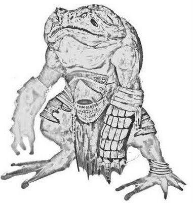
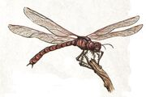

Oh el dulce pantano, con sus mosquitos, holores casi agradables... Para usuarios comunes, todo esto resulta muy desagradable, sin embargo, para los habitantes comunes de este lugar, son características completamente normales, les presento a los Hombres sapos, seres horrendos que pueden resultar bastante majos, sus tareas para alimentarse son sencillas, tienen granjas de libélulas gigantes, pescan, cazan y recolectan fruta natural de los pantanos.
Ellos tienden a vivir en en pequeñas islitas de tierra, rodeadas de barro y agua, por las que de vez en cuando compiten y se pelean, o sobre casas en arboles conectadas por puentes. Ahora hablemos de sus habilidades, los hombres sapo tienen varias características únicas, para empezar, a pesar de sus piernas carnosas, son realmente fuertes, a si que realizan saltos realmente altos, sus lenguas alcanzan longitudes de hasta 13 metros de largo, y, habitualmente, beben una poción para paralizar a sus enemigos con la lengua, que es de lo que iva a hablar ahora.
Las pociones, las brujas, todo ello forma parte de sus costumbres y habilidades, las brujas de pantano son las más conocidas por su habilidad de crear pociones de efectos negativos muy eficientes, nadie sabe como las hacen, sin embargo, no son tán habilidosas con la magia como otras razas que también se dedican a trabajar con pócimas.
Ahora hablemos de sus alrededores, los pantanos son muy característicos por tener una gran cantidad de plantas peligrosa, e insectos, por ello mismo, uno de los monstruos más característicos es la libélula gigante. Sus estadísticas no suelen ser las mejores, destacan en la velocidad, sin embargo, como he dicho antes, no son las mejores, los hombres sapos las comen, y crían, como los humanos a las vacas o cerdos.
Bueno, ahora tocan las plantas, nenúfares, hongos, plantas con esporas... Cosas de pantanos de barro, sin embargo, crece una planta que solo aparece en 1 único sitio, se trata de una planta similar a un arbol seco y retorcido, pero que sin embargo, sigue creciendo y produciendo frutas, frutas duras, y redondas, similares al ambar pulido, pero que, al abrirlo es pringosa y sabrosa, la vaina marchita.
Martín José Morata García